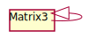

Class Matrix3
Hierarchy-Diagram
{kind=link}
Legend
 class
class
Hierarchy
- Matrix3
- Matrix3
Index
Constructors
Properties
Methods
clone
copy
determinant
equals
extract
Constructors
constructor
Properties
elements
elements: number[]
Methods
clone
copy
determinant
equals
extract
flatten
- flatten
To Array Offset(array: number[], offset: number): number[] -
Deprecated
Use .toArray() instead.
Parameters
-
array: number[]
-
offset: number
Returns number[]
-
from
- from
Array(array: number[] | ArrayLike<number>, offset?: number): Matrix3 -
Sets the values of this matrix from the provided array or array-like.
Parameters
-
array: number[] | ArrayLike<number>
the source array or array-like.
-
Optionaloffset: number(optional) offset into the array-like. Default is 0.
Returns Matrix3
-
get
- get
Inverse(matrix: Matrix4, throwOnDegenerate?: boolean): Matrix3 -
Deprecated
Use .invert() instead.
Parameters
-
matrix: Matrix4
-
OptionalthrowOnDegenerate: boolean
Returns Matrix3
-
- get
Inverse(matrix: Matrix): Matrix -
Parameters
-
matrix: Matrix
Returns Matrix
-
get
identity
invert
multiply
multiply
multiply
multiply
- multiply
Vector3(vector: Vector3): any -
Deprecated
Use vector.applyMatrix3( matrix ) instead.
Parameters
-
vector: Vector3
Returns any
-
multiply
premultiply
rotate
scale
set
set
set
to
- to
Array(array?: number[], offset?: number): number[] -
Returns an array with the values of this matrix, or copies them into the provided array.
Returns
The created or provided array.
Parameters
-
Optionalarray: number[](optional) array to store the matrix to. If this is not provided, a new array will be created.
-
Optionaloffset: number(optional) optional offset into the array.
Returns number[]
-
- to
Array(array?: Matrix3Tuple, offset?: 0): Matrix3Tuple -
Parameters
-
Optionalarray: Matrix3Tuple -
Optionaloffset: 0
Returns Matrix3Tuple
-
- to
Array(array?: ArrayLike<number>, offset?: number): ArrayLike<number> -
Copies he values of this matrix into the provided array-like.
Returns
The provided array-like.
Parameters
-
Optionalarray: ArrayLike<number>array-like to store the matrix to.
-
Optionaloffset: number(optional) optional offset into the array-like.
Returns ArrayLike<number>
-
translate
transpose
transpose
Static from
- from
Array<T>(array: number[][]): T -
Create a matrix from array
Returns
Matrix3
Type Parameters
-
T extends Matrix3<T>
Parameters
-
array: number[][]
Array
Returns T
-
Serializable THREE.js Matrix3